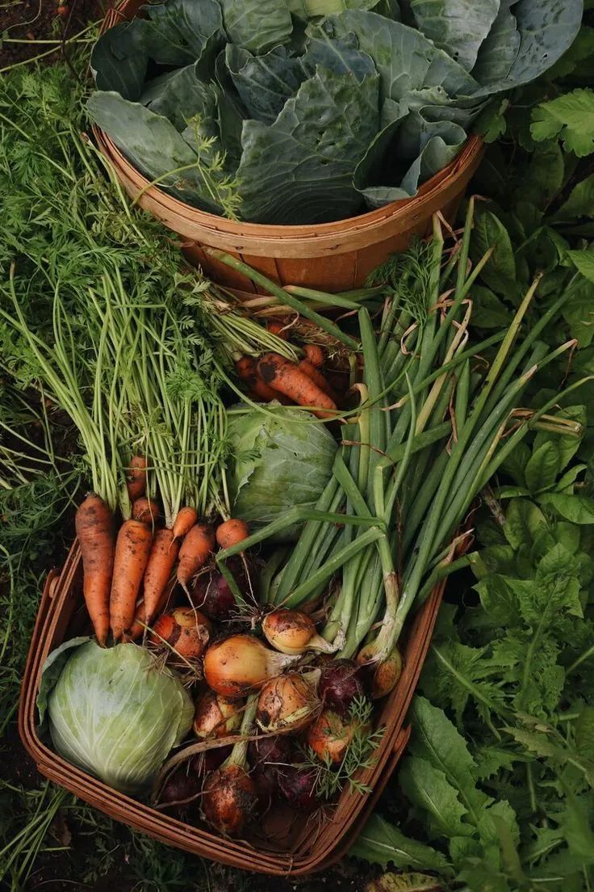

חומר גידול, כלים, השקיה ובחירת ירקות. מה שצריך לדעת לפני שנוטעים

גידול ירקות במרפסת נשען על שלושה נתונים: כמה שעות שמש המרפסת מקבלת, נפח הכלי שכל ירק דורש, ותערובת גידול במקום אדמה מהגינה. מרפסת עם ארבע שעות שמש ומעלה מגדלת כמעט כל ירק; מתחת לזה מתאימים ירקות עלים בלבד. עגבנייה, פלפל וחציל דורשים 5–10 ליטר מצע לצמח, וחסה ותבלינים מסתפקים בפחות.
אין כמו לאכול ירק שנקטף שניות לפני שהוא עולה לצלחת. כשגדלים ירקות על מרפסת, זה בדיוק מה שמקבלים, טעם שלא קיים בסלט שישב יומיים במקרר. אבל כדי שזה יעבוד, יש כמה עקרונות בסיסיים שחייבים להבין לפני שמתחילים.
הטעות הראשונה שאנשים עושים היא לשים אדמה רגילה בעציץ. זה לא עובד. תערובת גידול (מה שנמכר כ"מצע שתילה") היא חומר שונה לגמרי: קל בהרבה מאדמה, מאוורר, וכולל חומרים כמו פרליט, וורמיקוליט, טוף וסיבי קוקוס. שתפקידם לאפשר לשורשים לנשום ולמנוע עיבוי. ברוב המקרים הוא גם מכיל כבר דשן ראשוני, כך שאין צורך להוסיף כלום בהתחלה.
תערובת הגידול קלה גם לניקוז: המים עוברים דרכה ולא נשארים בתחתית בצורה שחונקת שורשים. לאחר שהצמח גדל ועובר זמן, כדאי לרענן את המצע. להוסיף מצע חדש או חומרי הזנה כמו קומפוסט ודשן. אם המצע התייבש לגמרי והמים עוברים ממנו כגשם, כדאי להשרות אותו במים עד שהוא "יחזור לעצמו".
גודל הכלי קובע את נפח השורשים, ומזה נגזר כל שאר הצמח. ירקות עם מערכת שורשים גדולה, עגבנייה, פלפל, חציל, מלון, מלפפון, דורשים נפח גידול של 5–10 ליטר לצמח. ירקות עם שורשים קטנים יחסית, חסה, תבלינים, מסתפקים בהרבה פחות.
הניקוז הוא הדבר הכי קריטי בבחירת הכלי. עציץ ללא חורי ניקוז = שורשים שנחנקים. כל כלי גידול חייב לאפשר מים לצאת ממנו בחופשיות. מבחינת חומרים, פלסטיק (PVC/PE) מתפרק בשמש ולא יחזיק שנים. עדיף כלי ממוחזר, בטון, חרס, גיגית, דלי או קופסה: כל מה שיש בבית יכול לשמש, כל עוד קודחים בו חור ניקוז.
כלל אצבע: מיכל בצורה אמבטית (רחב, בגובה 15–20 ס"מ ורוחב 30–40 ס"מ) באורך עד מטר יתאים לרוב סוגי הירקות. כלים כבדים כמו אבן. העמידו על גלגלים כדי שתוכלו להזיז אותם בקלות.
ירקות מטפסים, עגבנייה, פלפל, חציל, תפוח אדמה, ענפה (שלג), זקוקים לתמיכה כדי לגדול נכון ולהניב. כשהצמח מתחיל לגדול, קובעים מערכת תמיכה, מקל, מוט, רשת או חוטי קשירה. התמיכה צריכה להיות מספיק חזקה לשאת את הצמח, אבל לא כך שלא יוכל לנוע ולגדול. חלק מהמטפסים (תפוח אדמה, ענפה) ייאחזו לבד בתמיכה; אחרים יצטרכו קשירה עדינה לכיוון המבנה.
אם יש דבר אחד שמשפיע הכי הרבה על הצלחת הגן, זה אור. מרפסת דרומית מקבלת שמש מלאה ומצופות לה מעל 8 שעות אור ביום, אידיאלי לכמעט כל ירק. מזרחית/מערבית, 4–6 שעות. צפונית: 2–3 שעות בקיץ בלבד, ללא שמש ישירה בחורף.
אם החשיפה לשמש נמוכה מארבע שעות, עדיף לגדל ירקות עלים כמו חסה, תרד, כוסברה, פטרוזיליה, רוקט, סלרי ושמיר. אלה מתאימים לצל חלקי ולא דורשים שמש ישירה ארוכה. ירקות כמו גזר, מלפטון ועגבנייה עלולים לא להתפתח כמו שצריך בהצללה וייצרו תוצאות מאכזבות.
אם המרפסת דרומית ומוארת מאוד, ניתן בחודשי הקיץ (יוני–אוגוסט) לצלל בוילון או ברשת צל, או לגדול צמחים גבוהים (חמניה, תירס) שיצילו בצלם ירקות עדינים יותר מקרינה עודפת.
הסיבה העיקרית למוות של צמחים בעציצים היא עודף השקיה, לא מחסור. עציץ רטוב מדי = אין חמצן בתוכו = שורשים שנחנקים. בזמן השתילה, כדאי לרוות את המצע כולו לפני שמכניסים את השתיל, ואז לחכות עד שהצמח ישתמש ברוב המים ועד שהמצע יתייבש לפני שמשקים שוב.
אם השקית רק מסביב לשתיל ולא רוויתה את כל הכלי, השורשים יישארו רק באזור הרטוב ולא יתפשטו לשאר הנפח. עדיפה השקיה עמוקה ומרוכזת כל כמה ימים על פני ריסוס קטן יומי.
לפני השקיה: הכניסו אצבע לעומק 2–3 ס"מ לתוך המצע. לח? לא משקים. יבש לגמרי? כן. אם הצמח מראה קמילה, לחות בעלים, גלגול, צבהוב, זה סימן להשקיה עודפת לא פחות מצמא.
ניתן לרכוש זרעים בחנויות גינה ישראליות ולזרוע במועדים המפורטים בטבלה למטה. לחלופין, שתילי ירקות זמינים היום ברוב המשתלות וגם להזמנה. עדיפים שתילים בריאים ונכונים שנשתלו בסמוך לקבלתם.
עגבניות, עדיפו זני שרי (רמת) על פני עגבנייה גדולה. אל תתפתו לשתול צמחים מטפסים ופורשים כמו דלעת או אבטיח. הם תופסי שטח ולא מתאימים למרפסת. ירקות עלים (חסה, פטרוזיליה, כוסברה, ריחן, רוקט) הם ההמלצה הראשונה לגינת מרפסת. זמן הקציר שלהם קצר יחסית ואין להם צורך בהאבקה.
וורמי קומפוסט הוא כלי עזר מצוין למי שמגדל צמחים. התולעים אוכלות את שאריות האוכל שלכם ומייצרות דשן איכותי (הומוס תולעים) שמוסיפים לצמחים. לגידול תולעים על מרפסת נדרשים שני כלים. אחד לגידול (הכלי העליון) ואחד לאיסוף נוזלי דשן (הכלי התחתון). הכלי העליון צריך אוורור מהצדדים, להיות מוצל ומוגן מחום, ואסור לאור ישיר. מרפדים בקרטון ונייר ספוגים במים, ומוסיפים בהדרגה שאריות מזון: ככל שמספר התולעים גדל, ניתן להגדיל את כמות השאריות.
| ירק | מועד זריעה / שתילה | ימים לקציר | כיוון מרפסת | הערות |
|---|---|---|---|---|
| גזר | סתיו–חורף (לא בקיץ) | 120–200 | דרומי | זריעה דלילה, לדלל לאחר הנבטה. מרחיק תחמיץ מניב שנה ראשונה |
| חסה | זריעה מדורגת כל השנה | 30–50 | כל הכיוונים | ניתן לקטוף עלים בהדרגה. כמה זנים בבת אחת. לדלל לאחר הנבטה |
| כרוב | אביב וסתיו (לא בקיץ) | 90–120 | מזרחי / מערבי | מומלץ בעציץ גדול. הצלחה רבה יותר בסתיו ואביב מאשר קיץ |
| סלק | כל השנה | 50–90 | מזרחי / מערבי | עלים גם אכילים. מומלץ בעציץ עמוק. ניתן לגזום מספר פעמים |
| פטרוזיליה | לא בקיץ | 30–50 | מזרחי / מערבי (5+ שעות) | השקיה מתונה. ניתן לקציר חוזר |
| צנונית | סתיו–חורף–אביב | 30–40 | מזרחי / מערבי | צמיחה מהירה, לדלל. העלים גם אכילים |
| ריחן (בזיליקום) | אביב–קיץ | 30–50 | דרומי (6–8 שעות) | לא לחסוך יתר על המידה. משקה סדיר. חורף, יסיים חייו ויפרח |
| חציל | מאפריל עד יולי | 55–75 | דרומי | מומלץ בעציץ 8+ ליטר. להחליף לאחר שנתיים |
| מלפפון | אביב–קיץ | 40–80 | דרומי / מזרחי / מערבי | מומלץ 8+ ליטר. מומלץ לאכול עם קליפה. מטפס, דורש הילדה |
| עגבנייה | קיץ (מאי–יוני, מתחת לרשת) | 60–80 | דרומי / מזרחי / מערבי | מומלץ 8+ ליטר. לכסות ברשת מפני חרקים. מומלץ זני שרי |
| פלפל | קיץ | 75–85 | דרומי / מזרחי / מערבי | מומלץ 8+ ליטר. דורש הילדה. גם אפשר לשתול וגם לזרוע |
| אשוכית (קישואים) | אביב–קיץ | 40–60 | דרומי | הפרחים אכילים. מומלץ 10+ ליטר. לנקות עלים פגועים |
| שעועית | אביב–קיץ | 50–70 | דרומי | דורשת הילדה. קיימים זנים שונים בעונות שונות |
| ענפה (שלג) | סתיו–חורף | 30–60 | דרומי | דורשת הילדה. ניתן לאכול צעיר ללא בישול |
| בצל | ספטמבר–דצמבר (בצל ירוק, כל השנה) | 200–600 | מזרחי / מערבי | בצל ירוק: קצר גידול, ניתן לגזום חוזר ולשתול בצלצלים |
| ברוקולי | אביב וסתיו | 70–110 | דרומי | לאחר קטיף הראש, ראשים קטנים ימשיכו לצמוח. גם העלים אכילים |
| כוסברה | כל השנה (לא בשיא הקיץ) | 40–60 | דרומי | קצר חיים, ריצקי. כדאי לשמור זרעים מנבחרים |
| כרובית | אביב וסתיו | 90–110 | דרומי | ראשי כרובית גדלים גרוע בחום ויובש. גם העלים אכילים |
| כרישה | בין ספטמבר לינואר | 120–180 | דרומי | גידול ארוך. השקיה מסודרת. ניתן לגדל גם בצל חלקי בקיץ |
| סלרי | זורעים באוקטובר | 90–120 | דרומי | מעדיף טמפרטורות קרירות. ניתן לגזום מספר פעמים |
| פול | נובמבר–דצמבר | 150–170 | דרומי | מגיע ל-1.5 מ'. תמיכה בחוטים. קציר באביב |
| שום | אוקטובר | 150–180 | דרומי | ניתן לשתול "שיניים" מהמטבח. רגיש לעודפי מים |
| שומר | כל השנה | 60–90 | דרומי | צמח עמיד. לעיתים מתחדש מהבסיס. מעדיף מרווח מקום |
| שמיר | כל השנה | 60–75 | מזרחי / מערבי / דרומי | קצר חיים, ריצקי. רגיש לעודפי מים |
| תות שדה | מאוקטובר | עונתי | מזרחי / מערבי / דרומי | ניתן לגזום לקראת קיץ ולהקנות. יניב שוב בחורף הבא. כיסוי קש/פלסטיק מומלץ |
| תרד | סתיו–חורף | 40–60 | מזרחי / מערבי / דרומי | לגזום פעם אחר פעם עד הפריחה. כדאי לשמור זרעים. רגיש לעודפי מים |
נגיע לביקור, נבדוק את המרפסת ונתכנן גינה שנותנת תוצאות אמיתיות